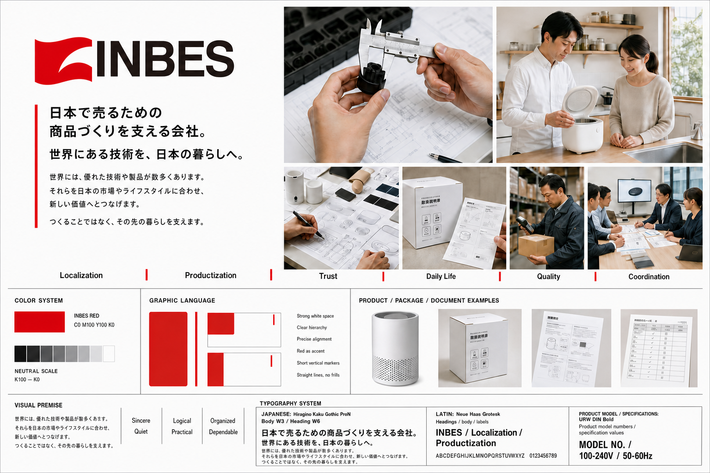

Primary Logo
横組みロゴを基本署名にする
- Minimum
- Web幅 104px
- Recommended
- 120–160px
- Clear space
- シンボル高の1/4以上
INBES Design System
Brand OSをWebへ展開するための、判断基準とUIの共通言語です。
Brand
Brand premise
写真と情報を主役にし、装飾ではなく整列と余白によって信頼をつくります。
横組みロゴを基本とし、シンボルは表示面積が限られる場所や短い識別に使用します。
Primary Logo
Symbol

Confirmed
Needs review
Foundation
Foundation
Brand OSを基準に、Web実装で共通利用する値を確定しています。
無彩色を主役にし、ロゴ赤より少し濃い赤をサイトの基調色として限定的に使います。
Logo Redはロゴ資産に限定し、操作にはSite Primary Redを使用します。DeepはHover、Paleは選択状態と薄い面に限定します。
#1F684B / #EAF4EF完了・受付済み
#805400 / #FFF4D8注意・要確認
#A51D2A / #FBEAEC入力不備・失敗
和文、欧文、製品仕様の役割を混ぜません。
Japanese / Hiragino Kaku Gothic ProN
世界にある技術を、本文 W3 / 見出し W6。情報の階層と可読性を優先します。
Latin / Neue Haas Grotesk
INBES / LocalizationHeadings / body / labels. 400, 500, 700を用途で使い分けます。
Product / URW DIN Bold
MODEL NO. / A03 100–240V / 50–60Hz商品型番と仕様値だけに使用します。
40 / 52 / 6432 / 36 / 4022 / 24 / 26商品仕様、説明、デザイン、販売準備を一つの流れとして整えます。
18 / 1.6 / W3注記や補足など、本文より優先度の低い情報に使用します。
14 / 1.6 / W312 / 1.4 / 7008pxを基本単位にします。
48162432486496Tailwindへの移行を前提とした共通値です。
要素の大きさに合わせて3段階で使い分けます。
4px8px12px4pxは操作部品、8pxはカード、12pxは大きな面に使用します。影はオーバーレイに限定します。
3:2を標準とし、製品・工程・暮らしを実在感のある写真で伝えます。
| Token | Value | Status | Source |
|---|---|---|---|
color.brand.logo-red | C0 M100 Y100 K0 / Web #E60012 | Confirmed | Supplied logo data / 2026-07-22 |
color.brand.primary-red | #C8101E | Confirmed | Web Foundation / 2026-07-29 |
color.brand.red-dark | #990D17 | Confirmed | Web Foundation / 2026-07-29 |
color.brand.red-light | #F7E8EA | Confirmed | Web Foundation / 2026-07-29 |
color.action.black-hover | #3A3A3A | Confirmed | Interaction contrast |
color.text.primary | #111111 | Confirmed | K100 principle |
color.state.success | #1F684B / #EAF4EF | Confirmed | WCAG contrast verified |
color.state.warning | #805400 / #FFF4D8 | Confirmed | WCAG contrast verified |
color.state.error | #A51D2A / #FBEAEC | Confirmed | WCAG contrast verified |
font.family.japanese | Hiragino Kaku Gothic ProN | Confirmed | D-0005 |
font.family.latin | Neue Haas Grotesk | Confirmed | D-0005 |
font.family.product | URW DIN Bold | Confirmed | D-0005 |
font.size.body | 18px / line-height 1.6 | Confirmed | Design review / 2026-07-22 |
font.scale.heading | H1 40/52/64・H2 32/36/40・H3 22/24/26 | Confirmed | Responsive / 2026-07-29 |
space.1–8 | 4 / 8 / 16 / 24 / 32 / 48 / 64 / 96 | Confirmed | 05 BUILD |
radius.sm–lg | 4 / 8 / 12 | Confirmed | Design review / 2026-07-22 |
media.aspect.default | 3:2 | Confirmed | Design review / 2026-07-22 |
layout.container | max 1200px / 768・1024・1280 | Confirmed | Tailwind aligned / 2026-07-29 |
icon.family | Iconoir Regular / outline | Confirmed | Phosphor comparison / 2026-07-22 |
icon.size | 20 / 24 / 32 / 48 | Confirmed | Design review / 2026-07-22 |
icon.stroke | 1.5px / round cap and join | Confirmed | Iconoir Regular |
Components
Components
主従、現在地、入力状態を色だけに依存せず伝えます。
塗りボタンは各領域で原則1つ。操作語を短くします。
Iconoir Regularを基本とし、線幅、サイズ、役割を統一します。アイコンだけで意味を伝えず、必要に応じてラベルを併記します。
Scale
20Inline24Control32Category48FeatureInterface
Domain
Status
構造は共通化し、モード切替とローカルナビだけを変えます。二つのサイトではなく、一つの企業にある二つの入口として扱います。
カテゴリと支援内容を区別します。
現在地を文字と形で示します。
企業窓口として落ち着いた入力面をつくり、状態は色・アイコン・言葉を併用して伝えます。
画面を閉じずにお待ちください。
受付完了メールをお送りしました。
入力内容と通信環境をご確認ください。
必要な情報だけを開きます。
作りたい商品が決まっていない段階から相談できます。
海外製品や既存技術を、日本市場に合わせて商品化する方法です。
補足操作を画面本体から分離します。
未入力の項目があります。
カードは反復する個別項目にだけ使用します。
クライアント：廣瀬無線電機株式会社
Product specification
会社情報、主要導線、法務情報だけを静かに整理します。ページ本文より目立たせません。
| Component | Variant | States | Usage |
|---|---|---|---|
| Button | Red solid / Black solid / Red outline / Black outline / Quiet / Icon | Default / Hover / Focus / Active / Disabled | 明確な操作 |
| Icon | Interface / Domain / Status | Default / Hover / Active / Disabled | 操作と分類の補助 |
| Text link | Internal / External | Default / Hover / Focus / Visited | 軽い遷移 |
| Input | Text / Email / Textarea / Select | Default / Focus / Filled / Error / Disabled | 問い合わせ |
| Tag | Category / Attribute / Active | Default / Selected | 分類と支援範囲 |
| Card | Product / Case / Information | Default / Hover / Focus | 反復する個別項目 |
| Overlay | Modal / Drawer | Open / Closed / Focus trapped | 補足操作 |
| Navigation | Business / Products / Footer | Default / Current / Focus | サイト内移動 |
Patterns
Patterns
現行の情報順序を基礎に、共通部品で一貫性をつくります。
Product Development Support
Development Approach
海外製品や既存技術を、日本市場に合わせて商品化します。
必要な場合の選択肢として扱います。
Contact
| Pattern | Components | Applicable pages |
|---|---|---|
| Hero | Eyebrow / H1 / Lead / Media | 商品化支援、進め方、実績、会社概要 |
| Product Overview | Category index / Product card / External link | 製品一覧 |
| Localization Process | Heading / Main approach / Steps / Option | 商品化支援 |
| Case Study | Media / Tag / Client / Link | 商品化支援、開発実績 |
| Contact Section | Heading / Primary / Secondary | 進め方、実績 |
| Contact Form | Field / Choice / Consent / Submit | 商品化相談、製品サポート |
Application
Application
Applied v0.4.0のFoundationと共通UIを、現行の情報設計とコピーを変えずに全ページへ適用しています。
| Page | Primary patterns | Design emphasis | Check |
|---|---|---|---|
| トップ | Two-way entrance | 2導線と写真を同格にする | モバイルで両入口を認識できるか |
| 製品一覧 | Category index / Product card | 写真と製品名を先に見せる | 既存ユーザーが迷わないか |
| 商品化支援 | Hero / Approach / Fields / Works | ローカライズ開発を主軸にする | 説明過多になっていないか |
| 進め方 | Start choice / Timeline / Design support | 相談から伴走する順序 | 工程説明だけに見えないか |
| 開発実績 | Case Study / Gallery / Tag | 写真と支援範囲を先に見せる | 文章を読まず理解できるか |
| 会社概要 | Message / About / Profile | 思想・事業・事実を分ける | サービス説明と重複しないか |
| お問い合わせ | Chooser / Form / Phone | 商品化相談と製品サポートを分ける | 心理的負担が小さいか |
| Policy | Text document | 可読幅と見出し階層 | リンクと更新日が明確か |
Desktop
Tablet
Mobile
Accessibility
Brand OS gap